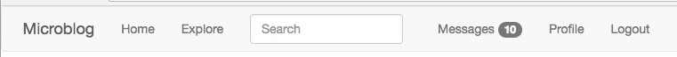

The Flask Mega-Tutorial, Part XXI: User Notifications
Posted by
on underThis is the twenty first installment of the Flask Mega-Tutorial series, in which I'm going to add a private message feature, along with user notifications that appear in the navigation bar without the need to refresh the page.
You are reading the 2024 edition of the Flask Mega-Tutorial. The complete course is also available to order in e-book and paperback formats from Amazon. Thank you for your support!
If you are looking for the 2018 edition of this course, you can find it here.
For your reference, here is the complete list of articles in this series:
- Chapter 1: Hello, World!
- Chapter 2: Templates
- Chapter 3: Web Forms
- Chapter 4: Database
- Chapter 5: User Logins
- Chapter 6: Profile Page and Avatars
- Chapter 7: Error Handling
- Chapter 8: Followers
- Chapter 9: Pagination
- Chapter 10: Email Support
- Chapter 11: Facelift
- Chapter 12: Dates and Times
- Chapter 13: I18n and L10n
- Chapter 14: Ajax
- Chapter 15: A Better Application Structure
- Chapter 16: Full-Text Search
- Chapter 17: Deployment on Linux
- Chapter 18: Deployment on Heroku
- Chapter 19: Deployment on Docker Containers
- Chapter 20: Some JavaScript Magic
- Chapter 21: User Notifications (this article)
- Chapter 22: Background Jobs
- Chapter 23: Application Programming Interfaces (APIs)
In this chapter I want to continue working on improving the user experience of my Microblog application. One aspect that applies to a lot of applications is the presentation of alerts or notifications to the user. Social applications show these notifications to let you know you've got new mentions or private messages, usually by showing a little badge with a number in the top navigation bar. While this is the most obvious usage, the notification pattern can be applied to a lot of other types of applications to inform the user that something requires their attention.
But to show you the techniques involved in building user notifications, I needed to extend Microblog with a feature that can benefit from them, so in the first part of this chapter I'm going to build a user messaging system that allows any user to send a private message to another user. This is actually simpler than it sounds, and it will be a good refresher on core Flask practices and a reminder of how lean, efficient and fun programming with Flask can be. And once the messaging system is in place, I'm going to discuss some options to implement a notification badge that shows a count of unread messages.
The GitHub links for this chapter are: Browse, Zip, Diff.
Private Messages
The private messaging feature that I'm going to implement is going to be very simple. When you visit the profile page of a user, there will be a link to send that user a private message. The link will take you to a new page in which a web form takes the message. To read messages sent to you, the navigation bar at the top of the page will have a new "Messages" link, that will take you to a page that is similar in structure to the index or explore pages, but instead of showing blog posts it will show messages other users sent you.
The following sections describe the steps I took to implement this feature.
Database Support for Private Messages
The first task is to extend the database to support private messages. Here is a new Message model:
app/models.py: Message model.
class Message(db.Model):
id: so.Mapped[int] = so.mapped_column(primary_key=True)
sender_id: so.Mapped[int] = so.mapped_column(sa.ForeignKey(User.id),
index=True)
recipient_id: so.Mapped[int] = so.mapped_column(sa.ForeignKey(User.id),
index=True)
body: so.Mapped[str] = so.mapped_column(sa.String(140))
timestamp: so.Mapped[datetime] = so.mapped_column(
index=True, default=lambda: datetime.now(timezone.utc))
def __repr__(self):
return '<Message {}>'.format(self.body)
This model class is similar to the Post model, with the only difference that there are two user foreign keys, one for the sender and one for the recipient. The User model can get two write-only relationships for messages send and received, plus a new field that indicates what was the last time each user read their private messages:
app/models.py: Private messages support in User model.
class User(UserMixin, db.Model):
# ...
last_message_read_time: so.Mapped[Optional[datetime]]
# ...
messages_sent: so.WriteOnlyMapped['Message'] = so.relationship(
foreign_keys='Message.sender_id', back_populates='author')
messages_received: so.WriteOnlyMapped['Message'] = so.relationship(
foreign_keys='Message.recipient_id', back_populates='recipient')
# ...
def unread_message_count(self):
last_read_time = self.last_message_read_time or datetime(1900, 1, 1)
query = sa.select(Message).where(Message.recipient == self,
Message.timestamp > last_read_time)
return db.session.scalar(sa.select(sa.func.count()).select_from(
query.subquery()))
The last_message_read_time field will have the last time the user visited the messages page, and will be used to determine if there are unread messages, which will all have a timestamp newer than this field. The unread_message_count() helper method actually uses this field to return how many unread messages the user has. By the end of this chapter I will have this number as a nice badge in the navigation bar at the top of the page.
The two relationships return messages sent and received for a given user. On the Message side of the relationship I also include the reverse relationships, which I called author and recipient:
app/models.py: Private messages relationships in Message model.
class Message(db.Model):
# ...
author: so.Mapped[User] = so.relationship(
foreign_keys='Message.sender_id',
back_populates='messages_sent')
recipient: so.Mapped[User] = so.relationship(
foreign_keys='Message.recipient_id',
back_populates='messages_received')
The reason why I used the name author as a relationship instead of the more expected sender is that by using author I can then render these messages using the same logic that I use for blog posts, given how similar posts and messages are.
That completes the database changes, so now it is time to generate a new migration and upgrade the database with it:
(venv) $ flask db migrate -m "private messages"
(venv) $ flask db upgrade
Sending a Private Message
Next I'm going to work on sending messages. I'm going to need a simple web form that accepts the message:
app/main/forms.py: Private message form class.
class MessageForm(FlaskForm):
message = TextAreaField(_l('Message'), validators=[
DataRequired(), Length(min=0, max=140)])
submit = SubmitField(_l('Submit'))
And I also need the HTML template that renders this form on a web page:
app/templates/send_message.html: Send private message HTML template.
{% extends "base.html" %}
{% import "bootstrap_wtf.html" as wtf %}
{% block content %}
<h1>{{ _('Send Message to %(recipient)s', recipient=recipient) }}</h1>
{{ wtf.quick_form(form) }}
{% endblock %}
Next I'm going to add a new /send_message/<recipient> route to handle the actual sending of the private message:
app/main/routes.py: Send private message route.
from app.main.forms import MessageForm
from app.models import Message
# ...
@bp.route('/send_message/<recipient>', methods=['GET', 'POST'])
@login_required
def send_message(recipient):
user = db.first_or_404(sa.select(User).where(User.username == recipient))
form = MessageForm()
if form.validate_on_submit():
msg = Message(author=current_user, recipient=user,
body=form.message.data)
db.session.add(msg)
db.session.commit()
flash(_('Your message has been sent.'))
return redirect(url_for('main.user', username=recipient))
return render_template('send_message.html', title=_('Send Message'),
form=form, recipient=recipient)
I think the logic in this view function should be mostly self-explanatory. The action of sending a private message is simply carried out by adding a new Message instance to the database.
The last change that ties everything together is the addition of a link to the above route in the user profile page:
app/templates/user.html: Send private message link in user profile page.
{% if user != current_user %}
<p>
<a href="{{ url_for('main.send_message',
recipient=user.username) }}">
{{ _('Send private message') }}
</a>
</p>
{% endif %}
Viewing Private Messages
The second big part of this feature is the viewing of private messages. For that I'm going to add another route at /messages that works in a fairly similar way to the index and explore pages, including full support for pagination:
app/main/routes.py: View messages route.
@bp.route('/messages')
@login_required
def messages():
current_user.last_message_read_time = datetime.now(timezone.utc)
db.session.commit()
page = request.args.get('page', 1, type=int)
query = current_user.messages_received.select().order_by(
Message.timestamp.desc())
messages = db.paginate(query, page=page,
per_page=current_app.config['POSTS_PER_PAGE'],
error_out=False)
next_url = url_for('main.messages', page=messages.next_num) \
if messages.has_next else None
prev_url = url_for('main.messages', page=messages.prev_num) \
if messages.has_prev else None
return render_template('messages.html', messages=messages.items,
next_url=next_url, prev_url=prev_url)
The first thing I do in this view function is update the User.last_message_read_time field with the current time. This is basically marking all the messages that were sent to this user as read. Then I'm querying the Message model for the list of messages, sorted by timestamp from newer to older. I decided to reuse the POSTS_PER_PAGE configuration item here since the pages with posts and messages are going to look very much alike, but of course if the pages were to diverge, it may make sense to add a separate configuration variable for messages. The pagination logic is identical to what I used for posts, so this should all be familiar to you.
The view function above ends by rendering a new /app/templates/messages.html template file, which you can see below:
app/templates/messages.html: View messages HTML template.
{% extends "base.html" %}
{% block content %}
<h1>{{ _('Messages') }}</h1>
{% for post in messages %}
{% include '_post.html' %}
{% endfor %}
<nav aria-label="...">
<ul class="pager">
<li class="previous{% if not prev_url %} disabled{% endif %}">
<a href="{{ prev_url or '#' }}">
<span aria-hidden="true">←</span> {{ _('Newer messages') }}
</a>
</li>
<li class="next{% if not next_url %} disabled{% endif %}">
<a href="{{ next_url or '#' }}">
{{ _('Older messages') }} <span aria-hidden="true">→</span>
</a>
</li>
</ul>
</nav>
{% endblock %}
Here I resorted to another little trick. I noticed that Post and Message instances have pretty much the same structure, with the exception that Message gets an extra recipient relationship (that I don't need to show in the messages page, since it is always the current user). So I decided to reuse the app/templates/_post.html sub-template to also render private messages. For this reason, this template uses the strange for-loop for post in messages, so that all the references to post in the sub-template work with messages too.
To give users access to the new view function, the navigation page gets a new "Messages" link:
app/templates/base.html: Messages link in navigation bar.
{% if current_user.is_anonymous %}
...
{% else %}
<li class="nav-item">
<a class="nav-link" aria-current="page"
href="{{ url_for('main.messages') }}">
{{ _('Messages') }}
</a>
</li>
...
{% endif %}
The feature is now complete, but as part of all these changes there were some new texts that were added in a few places, and those need to be incorporated into the language translations. The first step is to update all the language catalogs:
(venv) $ flask translate update
Then each of the languages in app/translations need to have its messages.po file updated with the new translations. You can find the Spanish translations in the GitHub repository for this project or in the download zip file.
Static Message Notification Badge
Now the private messages feature is implemented, but of course there is nothing that tells a user that there are private messages waiting to be read. The simplest implementation of a navigation bar indicator can be rendered as part of the base template, using a Bootstrap badge widget:
app/templates/base.html: Static message count badge in navigation bar.
...
<li class="nav-item">
<a class="nav-link" aria-current="page"
href="{{ url_for('main.messages') }}">
{{ _('Messages') }}
{% set unread_message_count = current_user.unread_message_count() %}
<span class="badge text-bg-danger">
{{ unread_message_count }}
</span>
</a>
</li>
...
Here I'm invoking the unread_message_count() method I added to the User model above directly from the template, and storing that number in a template variable of the same name. Then if that variable is non-zero, I just add the badge with the number next to the Messages link. Here is how this looks on the page:

Dynamic Message Notification Badge
The solution presented in the previous section is a decent and simple way to show a notification, but it has the disadvantage that the badge only appears when a new page is loaded. If the user spends a long time reading the content on one page without clicking on any links, new messages that come during that time will not be shown until the user finally does click on a link and loads a new page.
To make this application more useful to my users, I want the badge to update the count of unread messages on its own, without the user having to click on links and load new pages. One problem with the solution from the previous section is that the badge is only rendered to the page when the message count at the time the page loaded was non-zero. What's really more convenient is to always include the badge in the navigation bar, and mark it as hidden when the message count is zero. This would make it easy to make the badge visible using JavaScript:
app/templates/base.html: A JavaScript friendly unread messages badge.
<li class="nav-item">
<a class="nav-link" aria-current="page"
href="{{ url_for('main.messages') }}">
{{ _('Messages') }}
{% set unread_message_count = current_user.unread_message_count() %}
<span id="message_count" class="badge text-bg-danger"
style="visibility: {% if unread_message_count %}visible
{% else %}hidden{% endif %};">
{{ unread_message_count }}
</span>
</a>
</li>
With this version of the badge, I always include it, but the visibility CSS property is set to visible when unread_message_count is non-zero, or hidden if it is zero. I also added an id attribute to the <span> element that represents the badge, to make it easy to address this element using document.getElementById('message_count').
Next, I can code a short JavaScript function that updates this badge to a new number:
app/templates/base.html: Static message count badge in navigation bar.
...
{% block scripts %}
<script>
// ...
function set_message_count(n) {
const count = document.getElementById('message_count');
count.innerText = n;
count.style.visibility = n ? 'visible' : 'hidden';
}
</script>
{% endblock %}
This new set_message_count() function will set the number of messages in the badge element, and also adjust the visibility so that the badge is hidden when the count is 0 and visible otherwise.
Delivering Notifications to Clients
What remains now is to add a mechanism by which the client receives periodic updates regarding the number of unread messages the user has. When one of these updates occur, the client will call the set_message_count() function to make the update known to the user.
There are actually two methods for the server to deliver these updates to the client, and as you can probably guess, both have pros and cons, so which one to choose is largely dependent on the project. In the first approach, the client periodically asks the server for updates by sending an asynchronous request. The response from this request is a list of updates, which the client can use to update different elements of the page such as the unread message count badge. The second approach requires a special type of connection between the client and the server that allows the server to freely push data to the client. Note that regardless of the approach, I want to treat notifications as generic entities, so that I can extend this framework to support other types of events besides the unread messages badge.
The biggest thing the first solution has is that it is easy to implement. All I need to do is add yet another route to the application, say /notifications, which returns a JSON list of notifications. The client application then goes through the list of notifications and applies the necessary changes to the page for each one. The disadvantage of this solution is that there is going to be a delay between the actual event and the notification for it, because the client is going to request the list of notifications at regular intervals. For example, if the client is asking for notifications every 10 seconds, a notification can be received up to 10 seconds late.
The second solution requires changes at the protocol level, because HTTP does not have any provisions for a server to send data to the client without the client asking. By far the most common way to implement server initiated messages is by extending the server to support WebSocket connections in addition to HTTP. WebSocket is a protocol that unlike HTTP, establishes a permanent connection between the server and the client. The server and the client can both send data to the other party at any time, without the other side asking for it. The advantage of this mechanism is that whenever an event that is of interest to the client occurs, the server can send a notification, without any delays. The disadvantage is that WebSocket requires a more complicated setup than HTTP, because the server needs to maintain a permanent connection with each and every client. Imagine that a server that, for example, has four worker processes can typically serve a few hundred HTTP clients, because connections in HTTP are short lived and are constantly being recycled. The same server would be able to handle just four WebSocket clients, which in the vast majority of cases is going to be insufficient. It is for this limitation that WebSocket applications are typically designed around asynchronous servers, because these servers are more efficient at managing a large number of workers and active connections.
The good news is that regardless of the method that you use, in the client you will have a callback function that will be invoked with the list of updates. So I could start with the first solution, which is much easier to implement, and later, if I find it insufficient, migrate to a WebSocket server, which can be configured to invoke the same client callback. In my opinion, for this type of application the first solution is actually acceptable. A WebSocket based implementation would be useful for an application that requires updates to be delivered with near zero-latency.
In case you are curious, Twitter also uses the first approach for their navigation bar notifications. Facebook uses a variation of it called long polling, which addresses some of the limitations of straight polling while still using HTTP requests. Stack Overflow and Trello are two sites that implement WebSocket for their notifications. You can find what type of background activity occurs on any site by looking in the Network tab of the browser's debugger.
So let's go ahead and implement the polling solution. First, I'm going to add a new model to keep track of notifications for all users, along with a relationship in the user model.
app/models.py: Notification model.
import json
from time import time
# ...
class User(UserMixin, db.Model):
# ...
notifications: so.WriteOnlyMapped['Notification'] = so.relationship(
back_populates='user')
# ...
class Notification(db.Model):
id: so.Mapped[int] = so.mapped_column(primary_key=True)
name: so.Mapped[str] = so.mapped_column(sa.String(128), index=True)
user_id: so.Mapped[int] = so.mapped_column(sa.ForeignKey(User.id),
index=True)
timestamp: so.Mapped[float] = so.mapped_column(index=True, default=time)
payload_json: so.Mapped[str] = so.mapped_column(sa.Text)
user: so.Mapped[User] = so.relationship(back_populates='notifications')
def get_data(self):
return json.loads(str(self.payload_json))
A notification is going to have a name, an associated user, a Unix timestamp and a payload. The timestamp gets its default value from the time.time() function. The payload is going to be different for each type of notification, so I'm writing it as a JSON string, as that will allow me to write lists, dictionaries or single values such as numbers or strings. I added the get_data() method as a convenience, so that the caller doesn't have to worry about the JSON deserialization.
These changes need to be included in a new database migration:
(venv) $ flask db migrate -m "notifications"
(venv) $ flask db upgrade
As a matter of convenience, I'm going to add the new Message and Notification models to the shell context, so that when I start a shell with the flask shell command, the model class is automatically imported for me:
microblog.py: Add Message model to shell context.
# ...
from app.models import User, Post, Message, Notification
# ...
@app.shell_context_processor
def make_shell_context():
return {'sa': sa, 'so': so, 'db': db, 'User': User, 'Post': Post,
'Message': Message, 'Notification': Notification}
I'm also going to add a add_notification() helper method in the user model to make it easier to work with these objects:
app/models.py: Notification model.
class User(UserMixin, db.Model):
# ...
def add_notification(self, name, data):
db.session.execute(self.notifications.delete().where(
Notification.name == name))
n = Notification(name=name, payload_json=json.dumps(data), user=self)
db.session.add(n)
return n
This method not only adds a notification for the user to the database, but also ensures that if a notification with the same name already exists, it is removed first. You have seen before that write-only relationships can be queried by calling the select() method. The delete() method returns a delete query for the relationship, which removes all elements without loading them. By adding the where() clause I specify exactly which elements in the relationship I want to delete. The notification I'm going to work with is going to be called unread_message_count. If the database already has a notification with this name with, for example, a value of 3, whenever the user receives a new message and the message count goes to 4 I want to replace the old notification.
In any place where the unread message count changes, I need to call add_notification() so that I have my notifications for the user updated. There are two places where this changes. First, when the user receives a new private message, in the send_message() view function:
app/main/routes.py: Update user notification.
@bp.route('/send_message/<recipient>', methods=['GET', 'POST'])
@login_required
def send_message(recipient):
# ...
if form.validate_on_submit():
# ...
user.add_notification('unread_message_count',
user.unread_message_count())
db.session.commit()
# ...
# ...
The second place where I need to notify the user is when the user goes to the messages page, at which point the unread count goes back to zero:
app/main/routes.py: View messages route.
@bp.route('/messages')
@login_required
def messages():
current_user.last_message_read_time = datetime.now(timezone.utc)
current_user.add_notification('unread_message_count', 0)
db.session.commit()
# ...
Now that all the notifications for users are maintained in the database, I can add a new route that the client can use to retrieve notifications for the logged in user:
app/main/routes.py: Notifications view function.
from app.models import Notification
# ...
@bp.route('/notifications')
@login_required
def notifications():
since = request.args.get('since', 0.0, type=float)
query = current_user.notifications.select().where(
Notification.timestamp > since).order_by(Notification.timestamp.asc())
notifications = db.session.scalars(query)
return [{
'name': n.name,
'data': n.get_data(),
'timestamp': n.timestamp
} for n in notifications]
This is a fairly simple function that returns a JSON payload with a list of notifications for the user. Each notification is given as a dictionary with three elements, the notification name, the additional data that pertains to the notification (such as the message count), and the timestamp. The notifications are delivered in the order they were created, from oldest to newest.
I do not want clients to get repeated notifications, so I'm giving them the option to only request notifications since a given time. The since option can be included in the query string of the request URL, with the unix timestamp of the starting time, as a floating point number. Only notifications that occurred after this time will be returned if this argument is included.
The final piece to complete this feature is to implement the actual polling in the client. The best place to do this is in the base template, so that all pages automatically inherit the behavior:
app/templates/base.html: Polling for notifications.
...
{% block scripts %}
<script>
// ...
{% if current_user.is_authenticated %}
function initialize_notifications() {
let since = 0;
setInterval(async function() {
const response = await fetch('{{ url_for('main.notifications') }}?since=' + since);
const notifications = await response.json();
for (let i = 0; i < notifications.length; i++) {
if (notifications[i].name == 'unread_message_count')
set_message_count(notifications[i].data);
since = notifications[i].timestamp;
}
}, 10000);
}
document.addEventListener('DOMContentLoaded', initialize_notifications);
{% endif %}
</script>
This function is enclosed in a template conditional, because I want to poll for new messages only when the user is logged in. For users that are not logged in, this function will not be included because they cannot receive notifications.
You've already seen the DOMContentLoaded event in Chapter 20. This is how you register a function to execute after the page loads. For this feature, what I need to do on page load is to set up a regular timer that gets the notifications for the user. You've also seen the setTimeout() JavaScript function, which runs the function given as an argument after the specific time passes. The setInterval() function uses the same arguments as setTimeout(), but instead of firing the timer just once, it keeps calling the callback function at regular intervals. In this case my interval is set to 10 seconds (given in milliseconds), so I'm going to see the badge update with a resolution of roughly six times per minute.
The function associated with the interval timer issues an Ajax request for the new notifications route using fetch(). When this call returns it iterates over the list of notifications. When a notification with name unread_message_count is received, the message count badge is adjusted by calling the function defined above with the count given in the notification.
The way I'm handling the since argument might be confusing. I start by initializing this argument to 0. The argument is always included in the request URL, but I can't generate the query string using Flask's url_for() like I've done before, because url_for() runs in the server once, and I need the since argument to dynamically update. The first time, the request is going to be sent to /notifications?since=0, but as soon as I receive a notification, I update since to its timestamp. This ensures that I don't receive duplicates, since I'm always asking to receive notifications that occurred since the last notification I've seen. It's also important to note that I declared the since variable outside of the interval function, because I did not want this to be a local variable, I want the same variable to be used in all invocations.
The easiest way to try this out is to use two different browser. Log in to Microblog on both browsers using different users. Then from one of the browsers send one or more messages to the other user. The other browser's navigation bar should update to show the count of messages that you sent in less than 10 seconds. And when you click on the Messages link the unread message count resets back to zero.
Continue on to the next chapter.
Become a Patron!
Hello, and thank you for visiting my blog! If you enjoyed this article, please consider supporting my work on this blog on Patreon!

-
#1 Yuming said
Hi Miguel,
Compared with Chapter 21 of your 2018 Edition tutorial, you made some changes in the code listed as "app/templates/base.html: Polling for notifications". For example, now you callawait fetch('{{ url_for('main.notifications') }}?since=' + since);instead of
$.ajax('{{ url_for('main.notifications') }}?since=' + since)...I know both versions work and maybe they do the same thing behind the scenes, but I am curious if there is any technical reason why you made such changes? Or just your new personal preference?
Thanks
-
#2 Miguel Grinberg said
@Yuming the purpose was to remove jquery as a dependency.
-
#3 edu said
Hi Miguel, great tutorial!
I'm having problems with this chapter. Flask db migrate and db upgrade won't recognize the changes made in models (Error ColumnNotFound) I tried undoing the changes (messages and notifications) and then the error was 'language ColumnNotFound' So it went from not recognizing the new changes in models to actually regressing in the database changes. Up to the previous chapter everything worked fine (this IS a great tutorial) and I even tried using all the files from the github repo (including the migration scripts) from this chapter to see if it worked, it didn't. At this point I figure there's something wring with my configuration but I can't seem to understand what. Any clues?
desde ya, gracias! -
#4 Miguel Grinberg said
@edu: your database became out of sync for some reason. This is unlikely to be code or configuration, it is just that the database is in a state that Flask-Migrate is unable to make sense of. One option is to delete the entire database and run
flask db upgradeto recreate the database from scratch. -
#5 edu said
Thanks for the quick response. I did erase the database via drop_all, re initialized it and the same problem persisted.
I also tried adding "compare_type=True" to the migrate config but it did not make a difference. Maybe I should start over from the beggining or some point in the middle? -
#6 Miguel Grinberg said
@edu: the
drop_all()function deletes your tables only. It does not delete Alembic's own data. You need to properly delete the entire database. -
#7 edu said
Is there a command to delete the database entirely? or a proper way of doing it?
-
#8 Miguel Grinberg said
@edu: depends on the database. For SQLite the simplest way is to delete the database file from your terminal.
-
#9 Rodrigo Delduca said
I think you can also make use of Server Side Events (SSE) to delivery the notifications for the client.
-
#10 Miguel Grinberg said
@Rodrigo: yes, you can use SSE and you can use WebSocket. Unfortunately both of these options require a different type of web server that can hold a large number of concurrent connections. Definitely possible and recommended in some cases, but it isn't always best.
-
#11 Joey said
Hi Miguel,
How are you. I followed your instruction and I couldn't get anything from the /messages route, even for the headings. I couldn't find the issues, need your help.
Thanks,
Joey -
#12 Miguel Grinberg said
@Joey: the working code is available as a download. Look in the introduction section of this article.
-
#13 Oliver said
Hello Miguel, can this concept of notifications be applied to comments instead of private messages?
-
#14 Miguel Grinberg said
@Oliver: of course. Once you learn the pattern you can apply it to other sources of events.